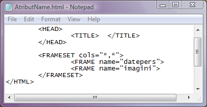

Atributul name
Atributul name al etichetei FRAME este extrem de util pentru ca el confera cadrului respectiv
un nume recunoscut de browser; astfel, dupa cum vom vedea in capitolul despre legaturi, incarcarea
unei pagini web se poate face intr-un cadru anume specificand numele lui.
Valoarea atributului name este un sir de caractere, de regula avand o anumita semnificatie pentru
programator. Sintaxa atribuirii unui nume cadrului este:
name="text"
Pentru utilizatorul care deschide pagina web faptul ca sunt atribuite nume diferitelor cadre nu are nici o
semnificatie: utilizatorul nu are de unde sa stie daca cadrele au atribuit un nume sau care este acest nume.
Iata in continuare codul unei pagini web ale carei cadre au fiecare cate un nume. Click pe cod pentru a deschide pagina
web.

In exemplul de mai sus, fereastra browserului este divizata in doua cadre coloane, cel din stanga avand
numele "datepers" iar cea din dreapta numele "imagini". Evident ca, in pagina web nu vor fi vizibile
aceste nume.
Inapoi la Cadre...